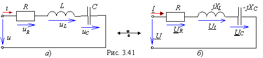

3.5.3. Комплексная схема замещения электрической цепи
Компонентные уравнения пассивных элементов в комплексной форме дают возможность изобразить комплексную схему замещения электрической цепи, составить и решить алгебраические уравнения относительно комплексов электрических величин, затем осуществить обратный переход от комплексов к синусоидальным функциям. 
|
||